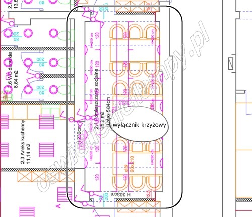

Schematy i projekty instalacji elektrycznej
Jak czytać projekty elektryczne objaśniające zasilanie gniazd w domu jednorodzinnym, czy oświetlenia domowego? Co oznaczają poszczególne symbole na schematach? Wszystkiego dowiesz się poniżej.
Jak czytać projekty elektryczne

W projektach elektrycznych najczęściej wykonywanych - mieszkaniowych, biurowych czy domów jednorodzinnych bardzo często spotkamy się z oznaczeniami instalacji oświetlenia. Na rysunku powyżej widoczne są oznaczenia wyłącznika uniwersalnego, zwanego również pojedynczym. Tego typu wyłączniki charakteryzują się pojedynczym klawiszem, za pomocą którego wysterujemy tylko jedną grupę oświetlenia (lub jedną lampę).
Jak czytać schematy elektryczne

źródło grafiki: www.elekctriclight.com.pl
Przeglądając schematy instalacji elektrycznej w domu możemy spotkać się z kilkoma sposobami tworzenia schematów rozdzielnic elektrycznych. Pierwszym, najnowocześniejszym sposobem jest schemat wielokreskowy z wykorzystaniem grafik urządzeń wykonawaczych zainstalowanych w rozdzielni elektrycznej - wyłączników nadmiarowo - prądowych, różnicowo - prądowych, zabezpieczeń przepięciowych, wyłącznika głównego, czy kontrolek faz. Osoba czytająca tego typu schemat powinna wiedzieć jak wyglądają poszczególne elementy wykonawcze instalacji elektrycznej. Jest to bardzo dobre rozwiązanie dla osoby chcącej dowiedzieć się w jaki sposób została połączona gotowa instalacja (rozdzielnia) elektryczna.

W górnej części zdjęcia wyróżniono symbol wyłącznika seryjnego. Przy pomocy tego wyłącznika możemy rozdzielić instalację oświetlenia w pokoju i wydzielić dwie grupy oświetlenia. Drugą funkcjonalnością jest możliwość "zapalania lampy w połowie lub w całości". O tym jak będzie sterowane oświetlenie decyduje sposób wykonania instalacji elektrycznej a nie sam wyłącznik, który jest tylko urządzeniem wykonawczym. Symbole tych wyłączników są ustandaryzowane i rzadko występują inne oznaczenia tych elementów instalacji elektrycznej.

Bardzo często w domach i mieszkaniach znajduje zastosowanie wyłącznik zmienny, inaczej zwany schodowym od miejsca zastosowania, ponieważ tego typu wyłączniki elektryczne montuje się na schodach lub w korytarzach by "tu włączyć, a tam wyłączyć".
Oznaczenia i symbole wyłączników w projektach elektrycznych
Włącznik / Wyłącznik krzyżowy
Symbol wyłącznika krzyżowego może kojarzyć się z jego nazwą. Jest to najdroższy wyłącznik w asortymencie osprzętu elektrycznego. Występuje także w wersji wyłącznika podwójnego krzyżowego. To jakby dwa wyłączniki krzyżowe upakowane w jeden, po to by zaoszczędzić miejsce i móc zamontować w jednej puszce podtynkowej. Wyłączniki krzyżowe stosowane są pomiędzy dwoma wyłącznikami zmiennymi. Np. jak w sytuacji na grafice, kiedy pomieszczenie posiada troje drzwi. W tym przypadku przy drzwiach umieszczonych po środku montujemy wyłącznik krzyżowy, natomiast przy reszcie drzwi wyłączniki schodowe.
Oznaczenia i symbole lamp / opraw elektrycznych w projektach

Tak przyjęto oznaczać oprawy elektryczne na projektach elektrycznych.

Jednak w rzeczywistości oprawy, zwane potocznie lampami oznaczane są w różny sposób. Normy dopuszczają oznaczanie opraw różnymi symbolami pod warunkiem załączenia legendy opisującej wszystkie oznaczenia.

Oprawy ewakucyjne, kierunkowe, jak i inne oprawy użytkowe powinny być oznaczane w taki sposób by bez wglądu w legendę domyślić się typu oprawy oświetleniowej.
Oznaczenia i symbole gniazd elektrycznych
Gniazda elektryczne 230V / RTV / UTP / inne

Gniazda elektryczne wtykowe oznaczane s± przez symbole jak na grafice. Gniazda innego typu, takie jak: gniazda UTP - do pod³±czenia internetu, antenowe - do pod³±czenia telewizji, kablówki (w tym tak¿e internetu), czy telefoniczne coraz rzadziej spotykane oznaczane s± w podobny sposób, jednak z dodatkowym opisem, typu "RTV", "KOM", "UTP", lub lekko zmiennionym kszta³tem / kolorem.
Artykuł ma charakter poglądowy i nie może być traktowany jako źródło wiedzy wykorzystywane do rzeczywistych napraw czy prac przy prądzie elektrycznym, ani wniosków teoretycznych mogących prowadzić do błędnych decyzji. Ponadto upomina się, że wszelkie prace związane z prądem elektrycznym, oraz wszelako pojętą instalacją elektryczną, powinny wykonywać osoby do tego uprawnione, z odpowiednim wykształceniem kierunkowym, wiedzą i zaświadczeniami.
Przyczytaj więcej o instalacjach elektrycznych, klikając tutaj.